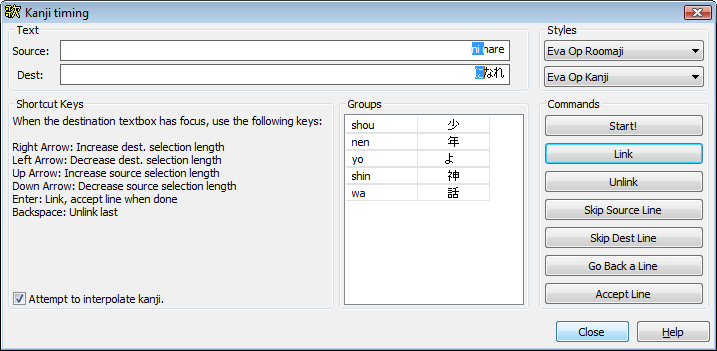

汉字计时器使得把打好K值的时间轴快速赋予到一条未打K值的时间轴非常方便。它多用于日文歌曲的卡拉OK时间轴制作。(常用于快速对应日文和罗马音)
这里有个汉字计时器的实际操作演示视频: 下载演示视频 (XviD MP3 AVI, 5 min 20 sec, 12 MB)
汉字计时器会尝试把打好K值的行(由用户指定样式的行)中的音节和未打K值的行(另一个指定样式的行)中的音节配对。换句话说，打好K值的行应该具有统一的一个样式(例如"romaji")未打K值的行应该具有统一的另一个样式(例如"kanji")。 打K的行比未打K的行多是不行的，反过来也一样。下面会展示几种汉字计时器正常工作的情况，我们应该尽量保证行与行之间是这样:
已打K的行 1
未打K的行 1
已打K的行 2
未打K的行 2
或者这样:
已打K的行 1
已打K的行 2
未打K的行 1
未打K的行 2
这样则 不行 (配对错误):
已打K的行 1
已打K的行 2
未打K的行 2
未打K的行 1
汉字计时器对话框看起来是这样:

你应该做的第一件事就是分别选择用于输入(获取)时间和输出(设置)时间的两个样式。你可以在对话框的右上角调整；上方的下拉菜单用于选择源(从中获取时间)样式，下方的下拉菜单用于选择目标样式(应用时间于)。当你选择完这两项，点击开始按钮。
现在，你会看见源行的第一个音节变为高亮，同时目标行中建议对应的音节也会高亮。你现在做的就是把源行中的每一个音节和目标行中的一个或多个汉字(或其他音节)对应起来。完成这些工作需要使用下面的快捷键: